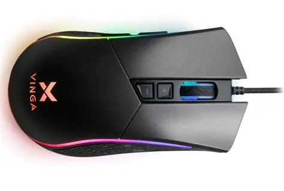
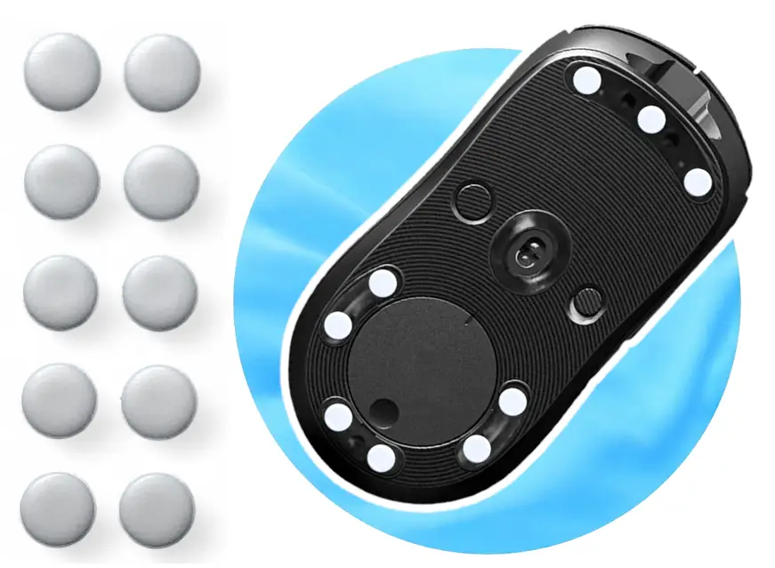
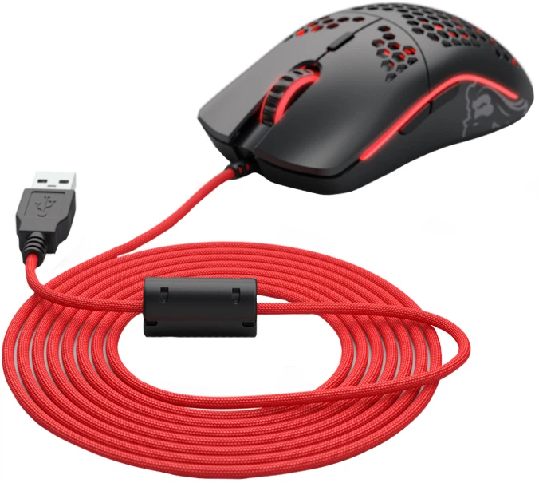

Світчі Kailh GM 8.0 (Black Mamba)
Легендарні мікроперемикачі з ресурсом у 80 мільйонів натискань. Забезпечують чіткий, тактильний та швидкий клік без даблкліків.
120 ₴ / пара
Кастомні мікроперемикачі з ідеальним кліком, 100% PTFE тефлонові ніжки для неймовірного ковзання та паракордові кабелі. Зроби свій девайс ідеальним.
Перейти до каталогу
Легендарні мікроперемикачі з ресурсом у 80 мільйонів натискань. Забезпечують чіткий, тактильний та швидкий клік без даблкліків.

Змінні ніжки з чистого тефлону. Забезпечують мінімальне тертя та ідеальний мікроконтроль на будь-яких ігрових килимках.

Ультралегкий та гнучкий кабель у паракордовому обплетенні. Дарує відчуття бездротової миші: жодного опору під час різких фліків.
Заміна старих зношених світчів (особливо Omron 50M) на нові Kailh або Huano назавжди вирішує проблему подвійного кліку.
Нові тефлонові ніжки з округленими краями дозволяють мишці ковзати стабільно, без ривків під час мікродоведення на ціль.